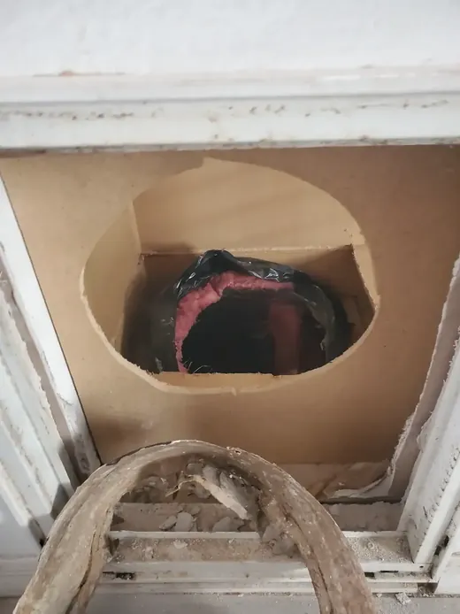

Home repair near me in Pinellas County
One local team for drywall, fixtures, doors, punch-list repairs, and mixed trade work across Safety Harbor, Clearwater, and Pinellas County.
Home repair near me in Pinellas County
One local team for drywall, fixtures, doors, punch-list repairs, and mixed trade work across Safety Harbor, Clearwater, and Pinellas County.
Home repair scopes we take on every week

Pinellas County houses mix block, stucco, and wood-frame construction — each ages differently in salt air. Knight Group addresses the maintenance backlog that accumulates between major remodels.
- Interior wall and ceiling patches with texture-ready finishes
- Kitchen and bath fixture corrections within handyman plumbing scope
- Interior and exterior door tuning, hardware, and weather seals
- Caulk renewal at tubs, windows, and lanai transitions
- Landlord punch lists spanning multiple rooms in one appointment
- Post-storm touch-ups: screens, soffits, and loose trim
- TV mounts, shelving, and safety hardware in occupied homes
- Coordination when a plumber or electrician finishes before paint closeout
Owner-operated accountability
Knight Group Handyman Services LLC is registered and insured in Florida. Vince Knight answers the phone, walks the property, and performs or directly supervises handyman-scope work. That matters when keys must be returned to a tenant by Friday or a listing photo shoot is Monday.
- Free written estimates before tools come out of the truck
- 5.0 Google rating from local homeowners and property managers
- Safety Harbor headquarters with daily Pinellas County routes
- Clear handyman vs. licensed trade boundaries on every job
Local home repair when you need one accountable team

Searches for home repair near me and knights home repair usually come from homeowners juggling a half-finished punch list — a loose handrail, a drywall scar from a moved outlet, a faucet drip, and a door that sticks after humidity. Knight Group is owner-operated in Safety Harbor and drives to Clearwater, Dunedin, Palm Harbor, Largo, Oldsmar, Seminole, and St. Petersburg with one written estimate and one point of contact.
Repairs we bundle on a single visit
- Drywall patches, nail pops, and ceiling touch-ups after minor leaks
- Fixture swaps, caulking refresh, and trim corrections in baths and kitchens
- Door adjustments, screen patches, and hardware alignment
- Rental turnover lists: locks, blinds, shelving, and move-in ready details
- Post-plumber or post-AC closeout when walls and paint still need finishing
Why neighbors choose a local handyman company

Franchise dispatch lines and out-of-county contractors add delays when you only need practical repairs. Vince Knight brings journeyman plumbing experience and a decade of Florida property-management work — useful when a job touches water, occupied units, or tight move-out dates. You speak with the person who shows up.
How to start a home repair request
Send photos through our booking form, call (813) 649-3341, or browse the project gallery for local proof. We confirm scope, materials, and whether any item needs a licensed trade before scheduling.
Related: handyman services, general repairs, Pinellas coverage map.
Pinellas County cities we visit for home repair

Knight Group routes daily through Safety Harbor, Clearwater, Dunedin, Palm Harbor, Largo, Oldsmar, Tarpon Springs, Seminole, and St. Petersburg. Whether you found us searching knights home repair or a neighbor shared a Google review, describe your punch list with photos and we confirm fit before scheduling.
Rental owners in Clearwater Beach-adjacent neighborhoods and inland Largo blocks use the same booking line — we document scopes useful for turnover deadlines and remote ownership.
Request your home repair estimate
List every room and concern in one message — photos of drywall, doors, and fixtures help us bring the right materials on the first drive. Written quotes arrive before work starts; active water issues should be phoned in at (813) 649-3341.
Frequently asked questions
Common questions homeowners ask before booking this type of work in Pinellas County.
Who handles home repair near me in Pinellas County?
Knight Group Handyman Services LLC is based in Safety Harbor and serves Pinellas County cities with registered, insured repair work. You work directly with the owner — not a distant call center.
Can one visit cover drywall, plumbing, and door fixes?
Yes — mixed punch lists are common. We sequence wet work first, confirm handyman scope for each item, and provide a written estimate before starting.
Do you work in Clearwater and St. Petersburg?
Yes. We regularly drive to Clearwater, St. Petersburg, Largo, Dunedin, Palm Harbor, Oldsmar, and Seminole for home repair scopes.
How do I get a home repair estimate?
Use the online booking form with photos, email details, or call (813) 649-3341. Estimates are free and written before work begins.
Are you insured for residential repair work?
Yes. Knight Group is registered and insured in Florida for handyman-scope residential repairs.
What repairs are outside handyman scope?
Permitted structural changes, main sewer work, panel electrical, and HVAC refrigerant work require licensed trades — we identify that during the estimate.


Ready to schedule?
Tell us what needs attention and where the property is located.